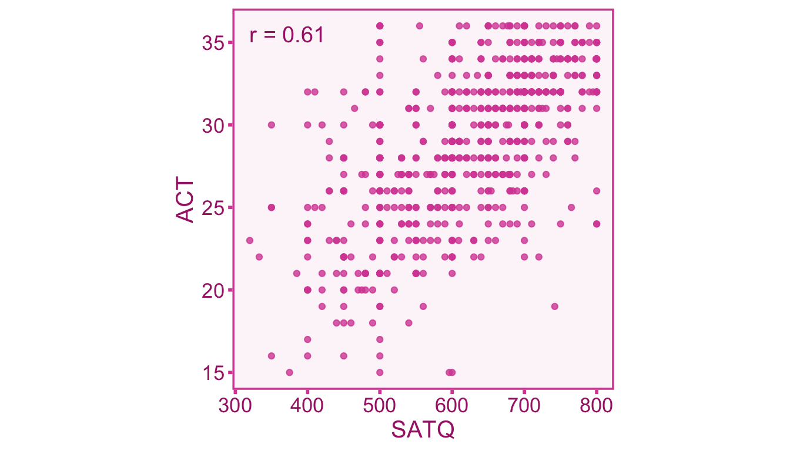
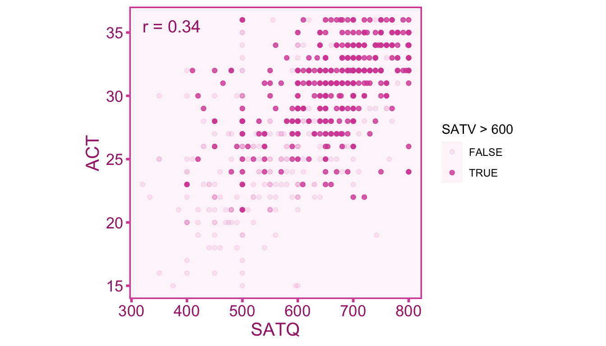
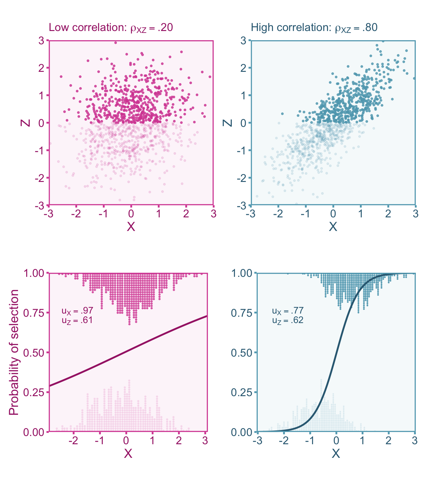
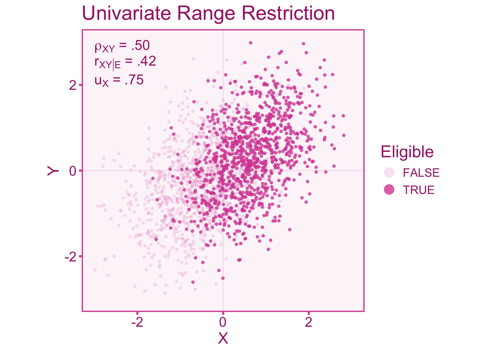
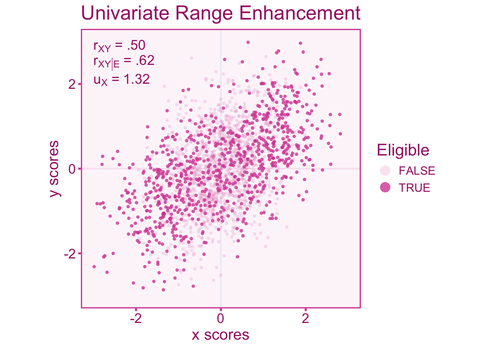
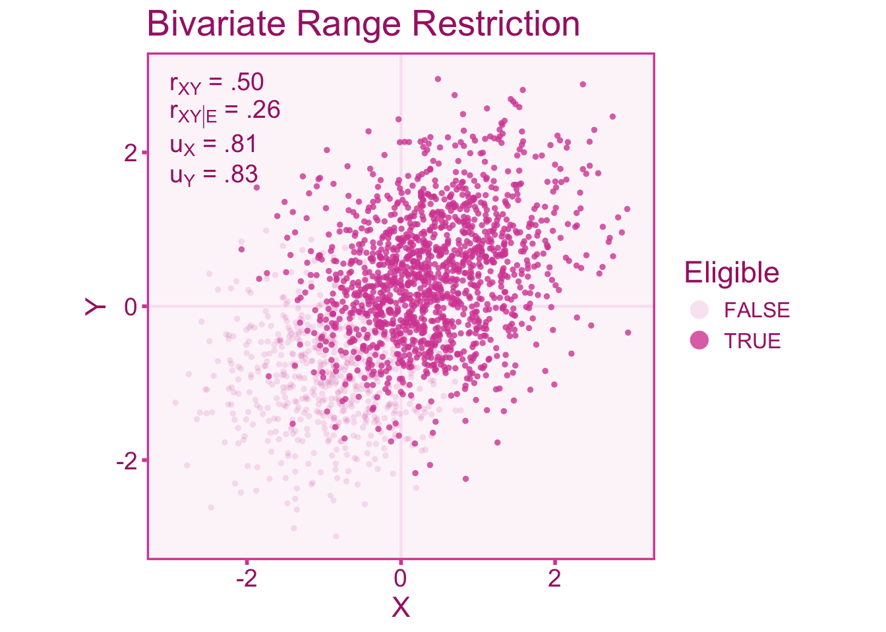
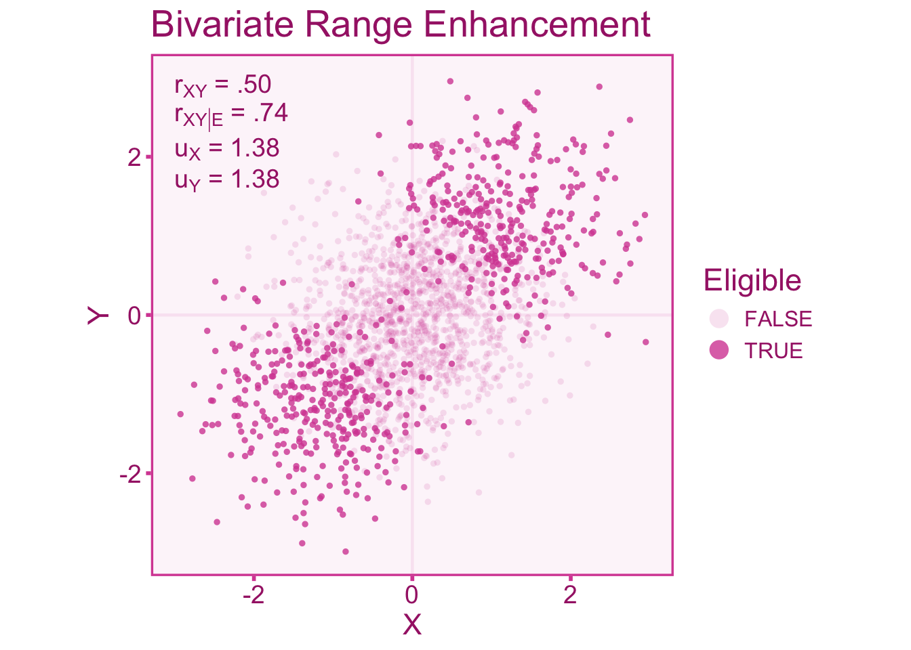

11 Indirect Selection
11.1 Introduction
Indirect selection occurs when the selection process is not directly on the variable of interest, but rather on another related variable. Similar to direct range restriction, this will cause restriction (or enhancement) in the variable of interest.
Example 11.1 (Correlation between Test Scores) Continuing with the example of test score correlations we saw in the chapter on direct selection. Recall A data set of 668 individuals who took both the SAT and the ACT from Revelle, Wilt, and Rosenthal (2010) can be used to estimate the correlation. The data set splits the SAT test into Quantitative (SATQ) and Verbal (SATV) subtests which each range from 200-800, whereas the ACT is reported as a score from 1-36. We can plot out the relationship between the SAT quantitative score (SATQ) and the ACT scores with a scatter plot (see Figure 11.1).
In the Figure 11.1 we see a strong correlation of .61 between test scores. Now let’s say we are looking at a sample of English tutors who were selected upon their verbal SAT scores (SATV > 600) as part of their job application. Therefore all the individuals who scored below 600 on the verbal section would not be included in this sample. Let’s see how that impacts the correlation:

As we can see in Figure 11.2 the correlation is attenuated from \(r=.66\) to \(r=.34\) when the range of students is restricted to SATV scores above 600.
11.2 Study Population
Recall in the direct range restriction chapter that we looked to define the study population \(\mathcal{E}\subseteq\Psi\) with respect to one or both of the random variables of interest (i.e., \(X\) and \(Y\)). For this chapter, we will introduce a new random variable \(Z\) that is not a variable of scientific interest to us. Therefore the study population can thus be defined as,
\[ \mathcal{E} = \left\lbrace\vphantom{\int} \psi\in \ell\left(Z^{-1}(B)\right)\;\middle\vert\; B \in \mathcal{B}_\mathbb{R} \right\rbrace \subseteq \Psi, \]
where \(B\) is some Borel set on the real line and \(\ell\) is the assignment to individual function. Most often \(B\) will be some interval on the real-line, for instance, the SAT and ACT example restricted scores above SATV > 600 therefore the eligible population is any person scoring within the interval \(B=[600,800]\) (where 800 is a perfect score).
11.3 Quantifying Selection-Induced Restriction/enhancement
The distribution of scores in the target population may exhibit a greater (or lesser) degree of variability compared to the sample that has been selected into the study. Therefore the standard deviation of scores in the target population (\(\sigma_{X}\)) may differ from the study population (\(\sigma_{X|\mathcal{E}}\)). To index the difference between the two standard deviations, we can calculate the u-ratio as we did with direct selection. The u-ratio is the ratio between the standard deviations of the population under selection and the target population such that (\(\upsilon\) denotes the population u-ratio),
\[ \upsilon_X = \frac{\sigma_{X|\mathcal{E}}}{\sigma_{X}} \tag{11.1}\]
The u-ratio in cases of range restriction will exist in the interval \(\upsilon_X\in[0,1)\) . Conversely, when the u-ratio is greater than 1, \(\upsilon_X\in(1,\infty]\), it is indicative of range enhancement. The target population standard deviation is often quite difficult to acquire since we do not usually have access to a random sample from that population. However, the target population standard deviation can be estimated from a reference sample that is representative of the target population. This often comes in the form of standardization samples or norm samples (obtained from test manuals) if the unrestricted group is the general population. For example, the distribution full-scale IQ scores derived from the Wechsler Adult Intelligence Test has a standard deviation of 15 in the US population (Wechsler 2008). We can use this estimate as the standard deviation for the unrestricted population. Lets say we select a sample from members of Harvard students, who tend to have higher IQs than the general population (this is due to the fact that selection criterion, such as GPA and SAT scores are positively correlated with IQ). If the standard deviation of IQ in Harvard students is 10, then the \(u\)-ratio would be,
\[ u_\widetilde{X} = \frac{s_{\widetilde{X}|\mathcal{E}}}{s_\widetilde{X}} = \frac{10}{15}= .67 \]
where \(u_\widetilde{X}\), \(s_\widetilde{X}\), and \(s_{\widetilde{X}|\mathcal{E}}\) are the sample estimate counterparts of the components in Equation 11.1. However it is not always the case that an estimate of the unrestricted standard deviation is readily available. Therefore if the reliability coefficient from the reference sample and the study can be used to estimate the \(u\)-ratio,
\[ u_X = \sqrt{\frac{1-r_{\widetilde{X}\widetilde{X}'}}{1-r_{\widetilde{X}\widetilde{X}'|\mathcal{E}}}} \]
Where \(r_{\widetilde{X}\widetilde{X}'|\mathcal{E}}\) and \(r_{\widetilde{X}\widetilde{X}'}\) are the reliability estimates from the sample under selection and the reference (target population) sample, respectively. In the context of indirect range restriction, the selection does not occur directly on \(X\) (or \(Y\)), instead it occurs on a third variable, \(Z\). Assuming linearity and homoscedasticity between variables, the affect that selection on \(Z\) has on \(X\) is dependent on the correlation between them, \(\rho_{XZ}\). Therefore we can see how the u-ratio of \(Z\) (\(\upsilon_Z\)) related to the u-ratio of \(X\) (Hunter, Schmidt, and Le 2006),
\[ u_X = \sqrt{\rho_{XZ}^2\upsilon_Z^2 -\rho_{XZ}^2 + 1 } \]
If \(\rho_{XZ}=0\), then you will notice that \(\upsilon_X=1\), effectively having no range restriction/enhancement on \(X\). Also, notice that a correlation of \(\rho_{XZ}=1\) will return \(\upsilon_X=\upsilon_Z\), indicating that directly selecting on \(Z\) would effectively be direct selection on \(X\) as well. This relationship between \(\upsilon_X\), \(\upsilon_Z\), and \(\rho_{XZ}\) can be visualized in Figure 11.3

11.4 Correcting Correlations
11.4.1 Defining our Target Correlation
We want to estimate the correlation in the target population between true scores of the independent (\(X\)) and dependent variable (\(Y\)). Within a study that suffers from indirect selection and measurement error, the observed score correlation will be biased relative to our target true score population correlation, \(\rho_{XY}\). We can model observed score correlation under direct selection as,
\[ r_{\widetilde{X}\widetilde{Y}|\mathcal{E}} = \alpha \rho_{XY} + \varepsilon_r \]
Where \(\alpha\) is the artifact attenuation/inflation factor and \(\varepsilon_r\) is the sampling error term.
11.4.2 Artifact Correction for Correlations
The Univariate Case
Range restriction (or enhancement) in either the independent or dependent variable will induce bias into the correlation coefficient. Let us consider a case where we select individuals based on meeting some criterion of some third variable, \(Z\). In the univariate case, we assume that selection on \(Z\) only directly affects restriction/enhancement in \(X\) while any restriction/enhancement in \(Y\) is mediated by the effect on \(X\) (see ?fig-corr-model-uni).
Now consider a study where we want to calculate correlation in the target population between an independent variable, \(X\), and a dependent variable, \(Y\). However, the individual’s are selected whether they are above the mean of \(Z\) (Mean = 0). We can thus define the selection function such that,
\[ \mathcal{E} = \left\lbrace\vphantom{\int} \psi\in \ell\left(Z^{-1}([-.5,\infty])\right) \right\rbrace \subseteq \Psi, \]
In the following examples, we will simulate a correlation of \(\rho_{XZ}=.80\). Figure 11.4 shows a u-ratio of about \(u_X=0.75\) in the independent variable. We see that the sample correlation in the restricted scores (\(r_{XY|\mathcal{E}}=.42\)) is attenuated relative to the unrestricted correlation (\(r_{XY}=.50\)).

We can also visualize what happens to the correlation when the range is enhanced. Enhancement can be accomplished by selecting individuals at the ends of the distribution (Taylor and Griess 1976). For indirect selection, individuals are selected at the ends of the distribution of \(Z\) such that the selection function can be defined as,
\[ \mathcal{E} = \left\lbrace\vphantom{\int} \psi\in \ell\left(Z^{-1}([-\infty,-1]\cup [1,\infty])\right) \right\rbrace \subseteq \Psi. \]
In Figure 11.5, we see an opposite effect on the correlation, that is, an inflation of the correlation rather than an attenuation like we see under range restriction. The scenario below has a \(u\)-ratio of about \(u_X=1.32\) in the independent variable.

In summary, if \(u_X>1\) the observed correlation is inflated relative to the correlation in the target population. Whereas the correlation is attenuated when \(u_X<1\) (Sackett and Yang 2000). The artifact attenuation/inflation factor \(\alpha\) for indirect selection is as follows (equation 5, Le and Schmidt 2006),
\[ \alpha = \sqrt{\rho_{XY|\mathcal{E}}^2 + \upsilon_{X}^2 (1- \rho_{XY|\mathcal{E}}^2) } \]
A sample estimate of the attenuation/inflation factor, \(a\), can be computed as,
\[ a = \sqrt{r_{XY|\mathcal{E}}^2 + u_{X}^2 (1- r_{XY|\mathcal{E}}^2) } \]
Using the estimated attenuation/inflation factor, we can correct the observed correlation for bias induced by indirect selection
\[ r_{XY} = \frac{r_{XY|\mathcal{E}}}{a} = \frac{r_{XY|\mathcal{E}}}{\sqrt{r_{XY|\mathcal{E}}^2 + u_{X}^2 (1- r_{XY|\mathcal{E}}^2) }} \tag{11.2}\]
If we want to correct for range restriction/enhancement and measurement error, we can incorporate the reliability coefficients (under selection) of \(X\) (\(r_{\widetilde{X}\widetilde{X}'|\mathcal{E}}\)) and \(Y\) (\(r_{\widetilde{Y}\widetilde{Y}'|\mathcal{E}}\)) into the formula for \(\alpha\),
\[ \alpha = \sqrt{\rho_{\widetilde{X}\widetilde{Y}|\mathcal{E}}^2 + \frac{\upsilon_{\widetilde{X}}^2 \rho_{\widetilde{X}\widetilde{X}'|\mathcal{E}}\left(\rho_{\widetilde{X}\widetilde{X}'|\mathcal{E}}\rho_{\widetilde{Y}\widetilde{Y}'|\mathcal{E}} - \rho_{\widetilde{X}\widetilde{Y}|\mathcal{E}}^2\right) }{1 - \upsilon_{\widetilde{X}}^2 \left(1-\rho_{\widetilde{X}\widetilde{X}'|\mathcal{E}}\right)} }. \tag{11.3}\]
The sample estimate of \(\alpha\) is,
\[ a = \sqrt{r_{\widetilde{X}\widetilde{Y}|\mathcal{E}}^2 + \frac{u_{\widetilde{X}}^2 r_{\widetilde{X}\widetilde{X}'|\mathcal{E}}\left(r_{\widetilde{X}\widetilde{X}'|\mathcal{E}}r_{\widetilde{Y}\widetilde{Y}'|\mathcal{E}} - r_{\widetilde{X}\widetilde{Y}|\mathcal{E}}^2\right) }{1 - u_{\widetilde{X}}^2 \left(1-r_{\widetilde{X}\widetilde{X}'|\mathcal{E}}\right)} } \tag{11.4}\]
Now correcting the observed correlation with this modified estimate of \(a\) to correct the observed correlation will yield the true score correlation in the target population,
\[ r_{XY}=\frac{r_{\widetilde{X}\widetilde{Y}|\mathcal{E}}}{a} = \frac{r_{\widetilde{X}\widetilde{Y}|\mathcal{E}}}{\sqrt{r_{\widetilde{X}\widetilde{Y}|\mathcal{E}}^2 + \frac{u_{\widetilde{X}}^2 r_{\widetilde{X}\widetilde{X}'|\mathcal{E}}\left(r_{\widetilde{X}\widetilde{X}'|\mathcal{E}}r_{\widetilde{Y}\widetilde{Y}'|\mathcal{E}} - r_{\widetilde{X}\widetilde{Y}|\mathcal{E}}^2\right) }{1 - u_{\widetilde{X}}^2 \left(1-r_{\widetilde{X}\widetilde{X}'|\mathcal{E}}\right)} }} \]
If the reliability coefficients come from the target population and do not suffer selection effects, we can estimate the reliability under selection using the following formulas (equation 11 and 12 Le and Schmidt 2006):
\[ r_{\widetilde{X}\widetilde{X}'|\mathcal{E}} = 1-\frac{1-r_{\widetilde{X}\widetilde{X}'}}{u_\widetilde{X}^2} \tag{11.5}\]
\[ r_{\widetilde{Y}\widetilde{Y}'|\mathcal{E}} = 1-\frac{1-r_{\widetilde{Y}\widetilde{Y}'}}{u_\widetilde{Y}^2} \tag{11.6}\]
We now need to adjust the standard error for the corrected correlation coefficient. To do this, we can either divide the observed standard error by the attenuation/inflation factor (or equivalently, the observed correlation divided by the corrected correlation),
\[ \widehat{\mathrm{var}}(r_{XY}) = \frac{\widehat{\mathrm{var}}\left(r_{\widetilde{X}\widetilde{Y}|\mathcal{E}}\right)}{a^2}= \frac{\widehat{\mathrm{var}}\left(r_{\widetilde{X}\widetilde{Y}|\mathcal{E}}\right)}{\left[\frac{r_{\widetilde{X}\widetilde{Y}|\mathcal{E}}}{r_{XY}}\right]^2}. \]
The Bivariate Case
Bivariate indirect range restriction/enhancement occurs when the selection variable has independent relationships with both the independent and dependent variable. Like we did for the univariate case, let’s visualize the correlation between independent (\(X\)) and dependent (\(Y\)) variables under range restriction by only selecting individuals above a score of -0.50 in our selector variable, \(Z\). Therefore the selection function can be defined as,
\[ \mathcal{E} = \left\lbrace\vphantom{\int} \psi\in \ell\left(Z^{-1}([-.5,\infty])\right) \right\rbrace \subseteq \Psi. \]
We will also fix the correlations between \(Z\) and independent variable, as well as the selector and dependent variable to be \(\rho_{XZ} = \rho_{YZ} = .80\). Unlike the univariate case, in the bivariate case \(X\) and \(Y\) have direct relationships with \(Z\). The scenario displayed in Figure 11.6, shows a \(u\)-ratio of about \(u_X=u_Y=0.81\) in the independent variable and dependent variables. We see in the figure below that the correlation in the restricted sample (\(r_{XY|\mathcal{E}}=.25\)) is attenuated relative to the target population correlation (\(r_{XY}=.50\)).

Likewise let’s visualize what happens to the correlation when the range is enhanced. Enhancement in both variables can be accomplished by selecting individuals at the ends of the distribution of \(Z\) (for this case we will select individuals below a score of -1 and above a score of 1). We can thus define the study population as,
\[ \mathcal{E} = \left\lbrace\vphantom{\int} \psi\in \ell\left(Z^{-1}([-\infty,1]\cup[1,\infty])\right) \right\rbrace \subseteq \Psi. \]
In Figure 11.7, we observe an inflation of observed correlation (\(r_{XY|\mathcal{E}}=.74\)) relative to the target correlation (\(r_{XY}=.50\)). Figure 11.7 has a \(u\)-ratio of about \(u_X=u_Y=1.38\) in both the independent variable and dependent variable.

A correction formula for bivariate range restriction is much more complicated than the univariate formulation. In the univariate case, we did not need any more information about the selection process beyond what we could infer from \(u_X\). However in the bivariate case, we need to have a basic idea of the selection mechanism at play (Dahlke and Wiernik 2020). Particularly we at least know the direction of the correlation between the selector variable, \(Z\), and the independent (\(\rho_{XZ}\)) and dependent variable (\(\rho_{YZ}\)). This will require a little bit of knowledge about the selection process within a given study. Let us first define a factor we will denote with \(\Lambda\) (Dahlke and Wiernik 2020). This factor takes into account the direction of the correlation of \(\rho_{XZ}\) (if positive, we can set \(\rho_{XZ}=1\), if negative, \(\rho_{XZ}=-1\), if zero, \(\rho_{XZ}=0\)) and \(\rho_{YZ}\) (repeat the same procedure as \(\rho_{XZ}\)). Therefore \(\lambda\) can be defined as,
\[\begin{aligned} \Lambda =& \text{ sign}\left(\rho_{XZ}\rho_{YZ} [1-u_X][1-u_Y]\right) \\[.3em] &\times\frac{\text{sign} \left(1-u_X\right)\min\left(u_X,\frac{1}{u_X}\right) + \text{ sign}\left(1-u_Y\right)\min\left(u_Y,\frac{1}{u_Y}\right) }{\min\left(u_X,\frac{1}{u_X}\right)+\min\left(u_Y,\frac{1}{u_Y}\right)}. \end{aligned}\]
Although complex, the output of \(\Lambda\) will be either -1, 0, or 1. We can then plug this factor into the full correction equation that provides us with an consistent estimate of the correlation in the unrestricted population,
\[ r_{XY} = r_{XY|\mathcal{E}}u_Xu_Y+\Lambda\sqrt{|1-u_X^2||1-u_Y^2|} \]
Similar to the univariate formula, we can also incorporate measurement error into the correction. Measurement error will bias the correlation on top of the bias induced by range restriction/enhancement. Therefore we can incorporate the reliabilities estimated within the restricted sample (\(r_{\widetilde{X}\widetilde{X}'|\mathcal{E}}\) and \(r_{\widetilde{Y}\widetilde{Y}'|\mathcal{E}}\)), into our correction formula:
\[ r_{XY} = \frac{r_{\widetilde{X}\widetilde{Y}|\mathcal{E}}\cdot u_\widetilde{X} u_\widetilde{Y}+\Lambda\sqrt{|1-u_\widetilde{X}^2||1-u_\widetilde{Y}^2|}}{\sqrt{1-u_\widetilde{X}^2\left(1-r_{\widetilde{X}\widetilde{X}'|\mathcal{E}}\right)}\sqrt{1-u_\widetilde{Y}^2\left(1-r_{\widetilde{Y}\widetilde{Y}'|\mathcal{E}}\right)}} \]
If the reliability estimates come from an target population reference sample, we can get estimates of the reliability coefficients in the selected sample using Equation 11.5 and Equation 11.6. We then can correct the observed sampling variance (\(\sigma^2_{\varepsilon_o}\)),
\[ \widehat{\mathrm{var}}(r_{XY}) = \frac{\widehat{\mathrm{var}}\left(r_{\widetilde{X}\widetilde{Y}|\mathcal{E}}\right)}{a^2}= \frac{\widehat{\mathrm{var}}\left(r_{\widetilde{X}\widetilde{Y}|\mathcal{E}}\right)}{\left[\frac{r_{\widetilde{X}\widetilde{Y}|\mathcal{E}}}{r_{XY}}\right]^2}. \]
11.5 Correcting Standardized Mean Differences (SMDs)
This section will look earily similar to the SMD section for direct selection, that is because the directions to correct the SMD as outlined here is virtually identical.
11.5.1 Defining our Target SMD
The quantity of interest is the target population SMD between actual members of groups 0 and 1. We can denote this SMD as \(\delta_{GY}\). Within a study that suffers from direct selection, the observed SMD (\(d_{GY|\mathcal{E}}\)) will be biased relative to the target, \(\delta_{GY}\). We can model the observed standardized mean difference as,
\[ d_{GY|\mathcal{E}}= \alpha\delta_{GY} + \varepsilon_d. \]
Where \(\alpha\) is the attenuation/inflation factor and \(\varepsilon_d\) is the sampling error term.
11.5.2 Artifact Correction for SMDs
11.5.2.1 Selection on the Continuous Variable
To correct for direct selection on the continuous variable, we can first convert the observed SMD (\(d_{GY|\mathcal{E}}\)) to a point-biserial correlation (\(r_{GY|\mathcal{E}}\)). Converting \(d_{GY|\mathcal{E}}\) to \(r_{GY|\mathcal{E}}\) can be done by using the observed proportion of individuals in group 0 (or 1), \(p_{G|\mathcal{E}}\),
\[ r_{GY|\mathcal{E}} = \frac{d_{GY|\mathcal{E}}}{\sqrt{\frac{1}{p_{G|\mathcal{E}}(1-p_{G|\mathcal{E}})}-d_{GY|\mathcal{E}}^2}}. \]
We can then correct the point-biserial correlation for univariate direct selection using the formulas in Section 10.4.2. Note that if you want to correct for measurement error as well, replace \(r_{\widetilde{X}\widetilde{X}'}\) with \(r_{\widetilde{G}\widetilde{G}'}\) (i.e., group classification reliability; see chapter on group misclassification) whenever you are working with SMDs. Once we obtained the corrected correlation, \(r_{GY}\), we can convert back to a standardized mean difference, we need to use an adjusted group proportions, \(p_G\):
\[ d_{GY} = \frac{r_{GY}}{\sqrt{p_G\left(1-p_G\right)\left(1-r_{GY}^2\right)}}. \]
Where the adjusted group \(p_G\) is estimated with the following formula
\[ p_G = \frac{1}{2}-\frac{1}{2}\sqrt{1-4p_{G|\mathcal{E}}(1-p_{G|\mathcal{E}})\left[1+r_{GY|\mathcal{E}}^2\left(\frac{1}{u^2_X}-1\right)\right]} \]
The adjusted proportion, \(p_G\), can also be estimated from the proportion of individuals in the target population (e.g., the proportion of men vs women in the general population). This adjustment is necessary in order to account for indirect selection in the grouping variable. This is similar to the situation described in Section 10.4.2, where one variable suffers from direct range restriction and any variable that is correlated with it, will suffer from indirect selection. The corresponding corrected sampling error can also be computed with the observed and adjusted proportions such that,
\[ \widehat{\mathrm{var}}(d_{GY}) = \frac {\widehat{\mathrm{var}}\left(d_{GY|\mathcal{E}}\right)\left(\frac{r_{GY}}{r_{GY|\mathcal{E}}}\right)^2} {\left(1+d_{GY|\mathcal{E}}^2\,p_{G|\mathcal{E}}[1-p_{G|\mathcal{E}}]\right)^2\left(d_{GY|\mathcal{E}}^2+\frac{1}{p_{G|\mathcal{E}}(1-p_{G|\mathcal{E}})}\right)p_G(1-p_G)(1-r_{GY}^2)^3}. \]